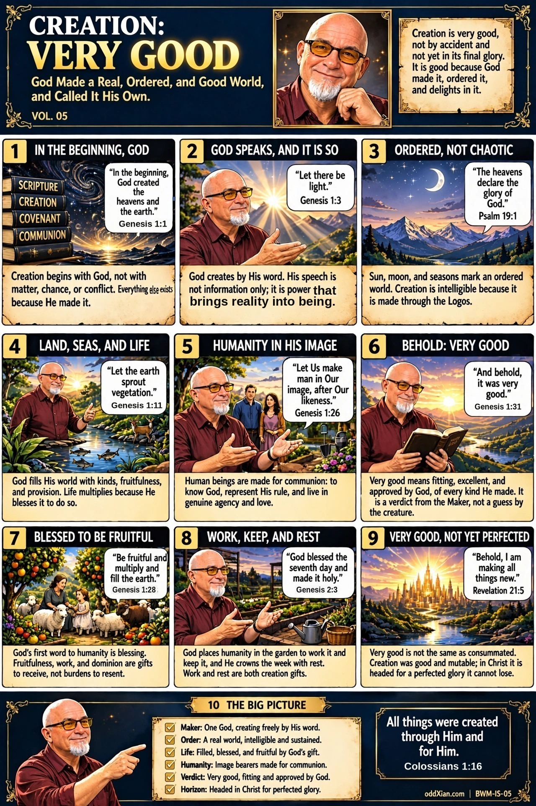

BWM-IS-05 · Creation: Very Good

The companion narrative and voiceover script for this volume are in production for the narrated-video edition of the series.
The plate, panel by panel
CREATION: VERY GOOD. VOL. 05. Subtitle: God Made a Real, Ordered, and Good World, and Called It His Own. Framing box: Creation is very good, not by accident and not yet in its final glory. It is good because God made it, ordered it, and delights in it. Book stack (panel 1): SCRIPTURE, CREATION, COVENANT, COMMUNION.
- IN THE BEGINNING, GOD. Bubble: "In the beginning, God created the heavens and the earth." Genesis 1:1. Caption: Creation begins with God, not with matter, chance, or conflict. Everything else exists because He made it.
- GOD SPEAKS, AND IT IS SO. Bubble: "Let there be light." Genesis 1:3. Caption: God creates by His word. His speech is not information only; it is power that brings reality into being.
- ORDERED, NOT CHAOTIC. Bubble: "The heavens declare the glory of God." Psalm 19:1. Caption: Sun, moon, and seasons mark an ordered world. Creation is intelligible because it is made through the Logos.
- LAND, SEAS, AND LIFE. Bubble: "Let the earth sprout vegetation." Genesis 1:11. Caption: God fills His world with kinds, fruitfulness, and provision. Life multiplies because He blesses it to do so.
- HUMANITY IN HIS IMAGE. Bubble: "Let Us make man in Our image, after Our likeness." Genesis 1:26. Caption: Human beings are made for communion: to know God, represent His rule, and live in genuine agency and love.
- BEHOLD: VERY GOOD. Bubble: "And behold, it was very good." Genesis 1:31. Caption: Very good means fitting, excellent, and approved by God, of every kind He made. It is a verdict from the Maker, not a guess by the creature.
- BLESSED TO BE FRUITFUL. Bubble: "Be fruitful and multiply and fill the earth." Genesis 1:28. Caption: God's first word to humanity is blessing. Fruitfulness, work, and dominion are gifts to receive, not burdens to resent.
- WORK, KEEP, AND REST. Bubble: "God blessed the seventh day and made it holy." Genesis 2:3. Caption: God places humanity in the garden to work it and keep it, and He crowns the week with rest. Work and rest are both creation gifts.
- VERY GOOD, NOT YET PERFECTED. Bubble: "Behold, I am making all things new." Revelation 21:5. Caption: Very good is not the same as consummated. Creation was good and mutable; in Christ it is headed for a perfected glory it cannot lose.
- THE BIG PICTURE. Checklist: Maker: One God, creating freely by His word. / Order: A real world, intelligible and sustained. / Life: Filled, blessed, and fruitful by God's gift. / Humanity: Image bearers made for communion. / Verdict: Very good, fitting and approved by God. / Horizon: Headed in Christ for perfected glory. Closing verse: "All things were created through Him and for Him." Colossians 1:16.